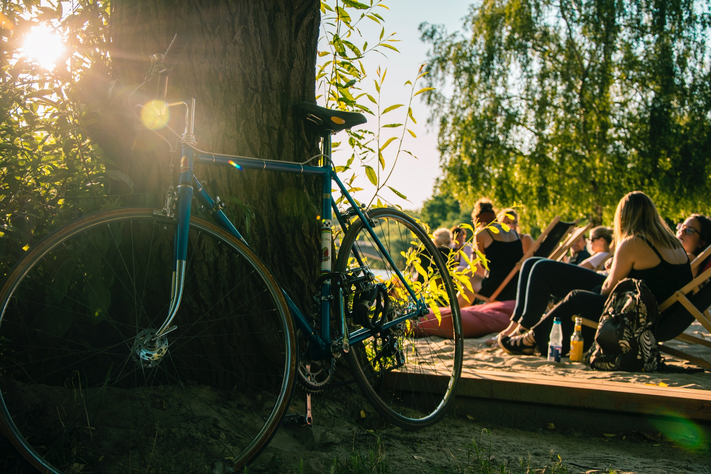
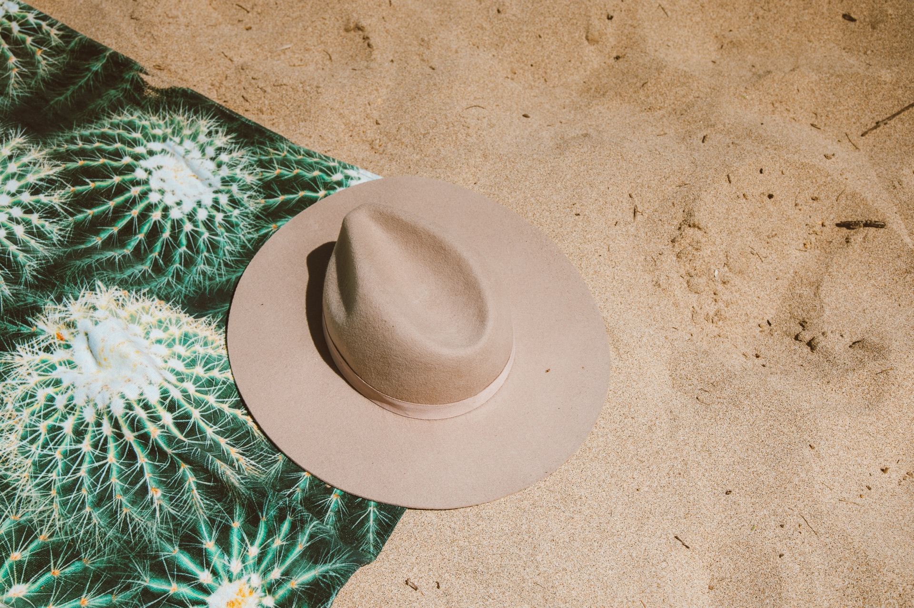
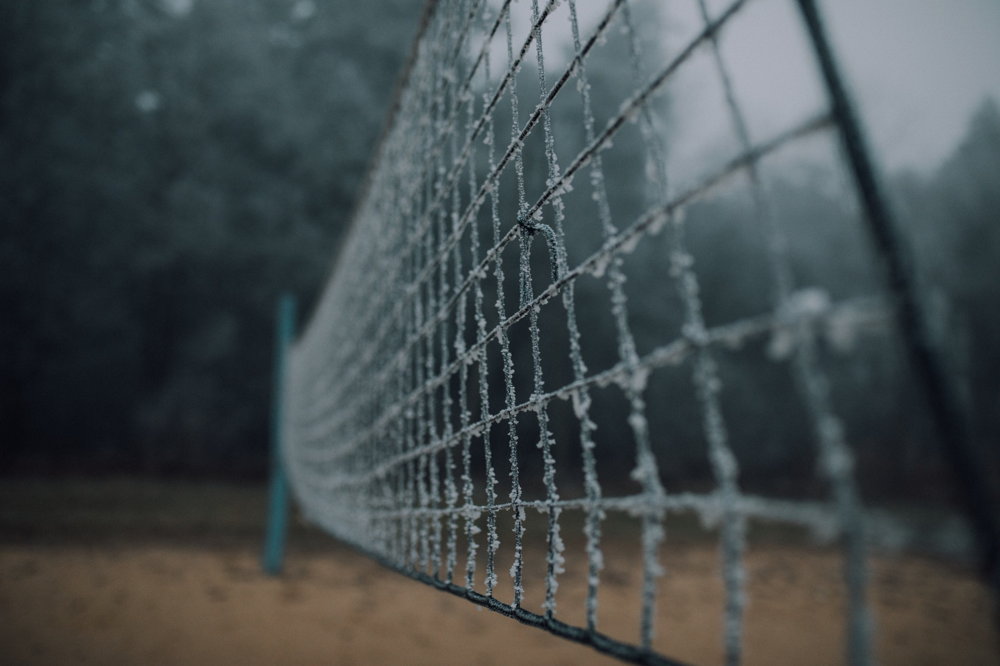
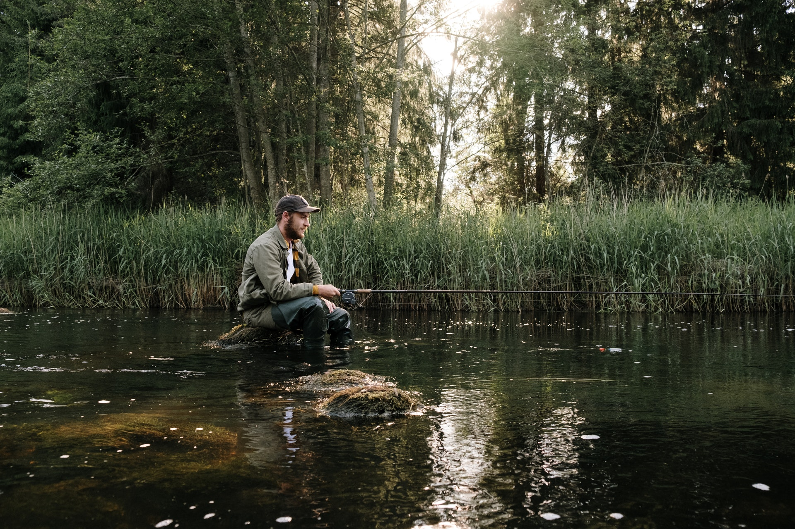
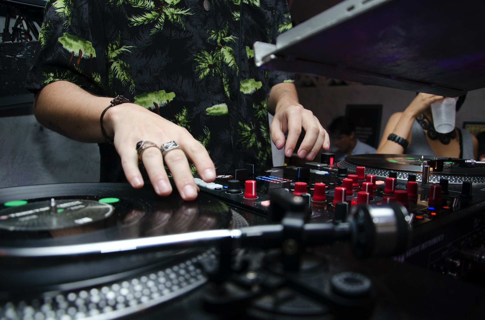
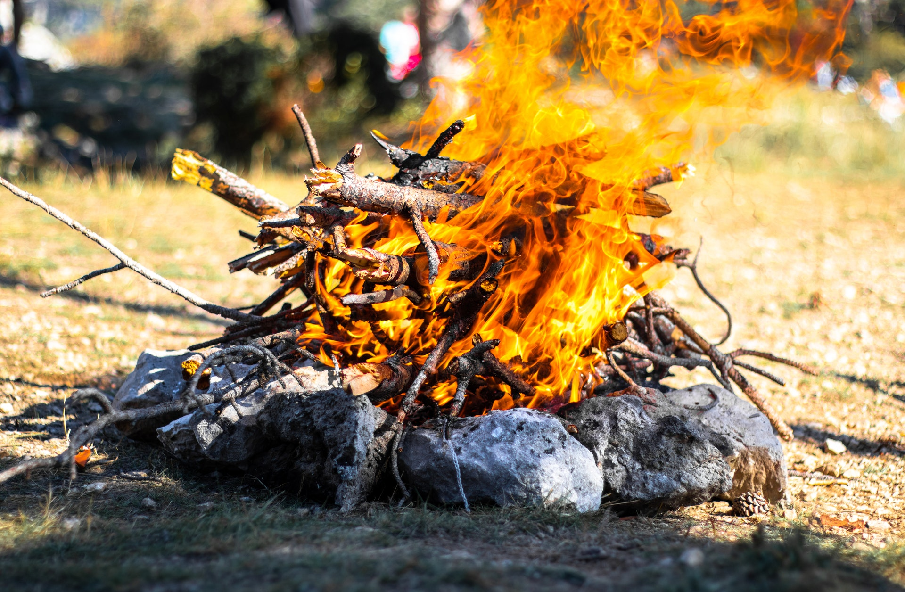
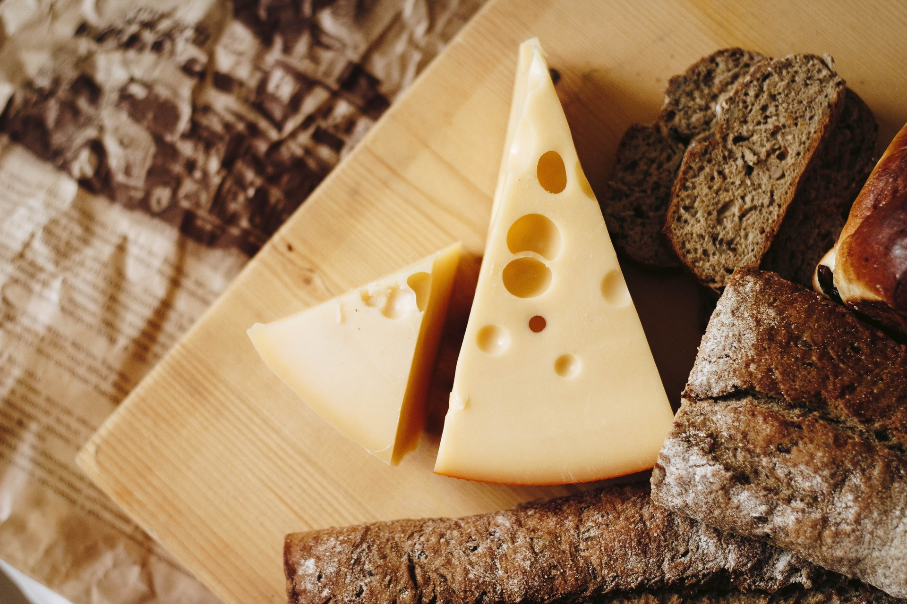
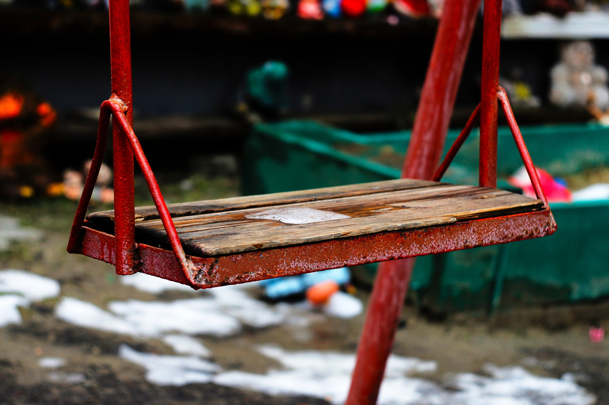

Możliwości spędzania wolnego czasu jest wiele - harce i zabawa na plaży, wyprawy rowerowe. Możemy podpowiedzieć też inne pomysły. Może marzycie o locie paralotnią lub balonem, może pragniecie zanurzyć się w muzyce na koncercie w Leśniczówce, a może chcecie poszukać żurawiny na bagnach przy leśnych jeziorkach? Chętnie podpowiemy co i gdzie.
Nie zapomnijcie też zarezerwować trochę czasu na nicnierobienie i drobne przyjemności. Na gapienie się w gwiazdy, na długie wieczory przy ognisku. W końcu to miejsce poza czasem...

Rowery
Dla fanów aktywnego spędzania czasu mamy przygotowanych 7 rowerów w tym 2 rowery dla dzieci. Z pewnością niedaleki szlak Green Velo bedzie idealnym miejscem by dośwaidczyć pięknej przyrody.

Plaża
W niedalekim sąsiedztwie znajduje się miejscowa plaża. bedąca szczególnym ukojeniem dla fanów opalania jak i dla tych co lubią popływać.

Boisko
Na terenie naszego gospodarstwa znajduje się boisko o podłożu piaskowym wraz z siatką do gry w siatkówke jak i w badmintona.

Wędkowanie
Dla tych co pasjonują się wędkarstwem mamy prygotowany odpowiedni sprzęt zarówno amatorski jak i pół-profesjonalny. W naszym stawie można złowić takie ryby jak: Karaśie, liny, płotki, sumy.

Zabawy
Co 2 tygodnie organizujemy impreze itegracyjną wraz z zaprzyjażnionym DJ'em, która odbywa się na wiacie niedaleko domków.

Ognisko
Wieczory można spędzic nad ogniskiem nad którym można sobie urządzić prawdziwą uczte. Obok stoi duży drewniany stół i ławy, a dla miłośników prostych smaków jest trójnóg z rusztem oraz kociołek, w którym powstaje chrosiówkowa zupa.

Sery
Sery robimy od niedawna. Zaczęło się od poszukiwania prostej, dobrej żywności. Zaczęliśmy sami piec chleb żytni na zakwasie, warzyć piwo, kisić kapustę. Za każdym razem okazywało się, że to wcale nie takie skomplikowane. I że całym sekretem są dobre składniki i trochę serca. Do sera używamy tylko mleka, odpowiednich kultur bakterii, podpuszczki i soli.

Plac Zabaw
Nieopodal ogniska jest zbudowany duży plac zabaw - małpi gaj z siatkami do wspinania, huśtawkami, równoważnią, domkiem do którego można wspiąć się po ściance wspinaczkowej lub po rurze strażackiej. Są też poziome metalowe drążki, przypominające trzepaki, kiedyś obowiązkowe na każdym podwórku.